跳到主要內容
SCAI-Agent 半導體前瞻戰略情報儀表板

SCAI-Agent
半導體前瞻戰略情報
—
簡略
詳細
‹
›
⧉
本週結論
01
總覽
02
公司規畫
03
風險雷達
證據與方法
04
趨勢圖表
05
本週事件
06
決策軌跡
07
自我稽核
08
企業畫像
09
方法論
第一次看？照這順序
①
本週結論與該做的事
②
給欣銓的具體規畫
③
憑什麼這樣判斷（每步可查證）
↑
✕
✕
跳轉到這一週